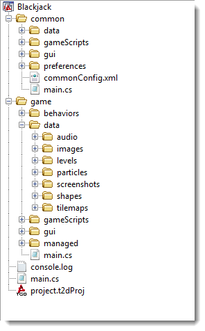

Introduction
A default project created in Torque2D has a common file hierarchy which all
script and resource files are stored in.
File Hierarchy

- common
- data - Common data.
- gameScripts - Common scripts to provide base functionality.
- gui - Common GUI elements and screen layouts.
- preferences - Game preferences are stored here.
- game
- behaviors - The .cs TorqueScript files for all of the Behaviors in your game.
- data - All the images, sounds, music, fonts and more
- audio - All the audio for your game
- levels - The .t2d level files, each containing an individual Scene, for your game
- particles - The files containing the Particle Effect data. This only stores the control code for the particles, not the images.
- screenshots - Game screenshots are stored to this folder.
- shapes - This folder is for 3D shape objects.
- tilemaps - All tilemaps are stored to this folder.
- gameScripts - This is where the game.cs file is located.
This file is the starting point for your game.
- gui - The .gui files for your in-game Graphical User Interfaces
- managed - Contains the datablock and brush files for your project. It
also contains the script files that carry the definitions of persistent game
objects. These are created and managed by the Torque2D editor.
Conclusion
Each Torque2D project has a standard hierarchical layout, making it
easy for even a new Torque developer to find their way through any
Torque2D project. |